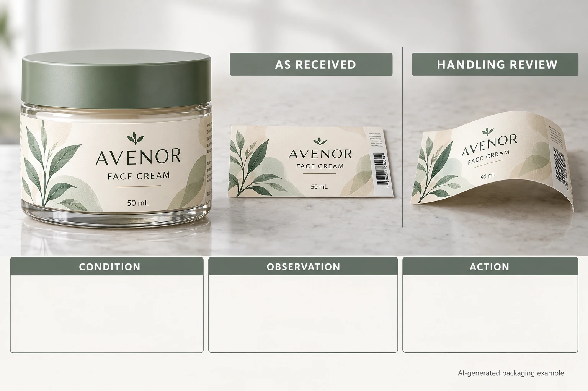

Identify what is curling
Locate the change: the whole sheet, a carrier edge, an individual label on the carrier or the label after application. Record whether the sheet arrived that way or whether the observation appeared after a known handling event.
Photograph the sheet on the actual review surface without forcing it into a preferred shape. Include a context view that shows the supplied arrangement and a closer view of the relevant area. If several designs share a sheet, identify which part is being reviewed rather than attributing the observation to every label.
The roll-versus-sheet guide helps choose the broader delivery format. This article adds the sheet-flatness and hand-peel usability decision after sheets have been proposed.
Ask which guidance applies to the supplied construction
Avery's label-printing guidance links humidity and sheet curl for its label products. That supports checking conditions; it is not proof of the cause or a conditioning instruction for every custom printed sheet.
Obtain the actual supplier's storage and handling advice for the finished supply. Ask whether its recommendation covers the printed face, liner and finish in this order. A procedure suitable for blank office labels should not silently become the treatment for a finished cosmetic label construction.
Do not heat, wet, bend repeatedly or load the sheets under improvised weights without a supplier-supported method. Those actions can change the material or remove evidence. If controlled conditioning is proposed, record the authorization, conditions, timing and sample identity so the before-and-after observations remain meaningful.
Review the task the packer must complete
Ask how the team holds the sheet, starts a peel, maintains artwork orientation and keeps the remaining labels protected. A slight sheet shape that does not obstruct the agreed task is a different purchasing issue from a supply that cannot be handled under the intended method.
Use a representative sheet, not a single loose label. If the delivery has a proposed access border or carrier arrangement, the sample should include it. The cut-shape and backing guide covers that separate boundary decision.
Keep the hand-applied appearance sample identifiable. Demonstrating that a packer can remove the label from its sheet does not establish adhesion on the actual container. Conversely, a good bottle bond does not settle whether a large sheet format is convenient at the bench.
Use a sheet-presentation review table
The following record is an editorial aid. It sets no universal flatness tolerance or storage period.
| Field | Information to identify | Decision supported |
|---|---|---|
| Supply | Job, design, construction and sheet reference | Which presentation was evaluated? |
| Initial condition | Natural flatness and relevant views | What arrived or was observed? |
| Known history | Receipt, opening and handling conditions | What is known and what remains unknown? |
| Supplier advice | Applicable finished-label instruction | Which conditioning or handling is supported? |
| Hand task | Grip, peel access and orientation | Is the presentation usable for the intended operation? |
| Comparison | Same supplied construction and agreed review conditions | Is a changed observation interpretable? |
| Action | Accept scope, request review or change presentation | Who authorizes the next step? |
Establish the supply and initial condition first. Get the applicable advice, then evaluate the hand task on an identified representative sheet. If the supplier requests a comparison after conditioning, keep both observations and the actual conditions with the record.
If the sheet format itself blocks the agreed task, ask about an alternative supported presentation. Changing to rolls, smaller sheets or another carrier arrangement is a quotation and handling decision, not an automatic remedy promised by this guide.

Avoid correcting the wrong stage
A hypothetical packer may have usable sheets but apply the label unevenly to the bottle. Changing sheet flatness will not necessarily solve that separate placement problem. Identify the event that is actually causing the decision blocker.
Another packer may be unable to manage the proposed large carrier at its bench while individual applied samples look satisfactory. Its useful next step is a supported delivery-format review. The brand should compare the handling benefit and quotation conditions rather than insist that the original presentation must be retained.
Store remaining identified stock under its actual supplier instructions; the storage guide explains the records to keep. For cosmetic labels, send sheet photos, construction and job reference, intended hand task, container details and quantity per design. Use the inquiry form to draft the message, then send files by email or WhatsApp. Request advice on the supplied sheet and the actual task, not a guessed cause.